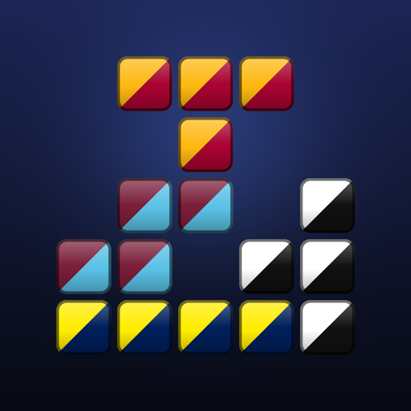

For You Blocks
Blokları takımının renkleriyle, renklerle ya da emojilerle oyna. Satır patlayınca çalan sesi kendin seç, haftalık Genel Lig'de herkesle yarış.
Sık sorulanlar
Lig ne zaman sıfırlanıyor?
Her pazartesi 03:00'te (Türkiye saati) yeni sezon başlar. Tabloda o haftaki en yüksek skorun görünür.
Kademeler nasıl belirleniyor?
Haftalık sıralamaya göre: ilk 20 Elmas Lig, 21–100 Altın Lig, 101–500 Gümüş Lig, sonrası Bronz Lig.
Kullanıcı adımı nasıl değiştiririm?
Genel Lig → Hesabımı sil ile hesabını silip yeni bir adla tekrar katılabilirsin. Takım renklerini ise istediğin zaman "Renklerimi değiştir" ile değiştirebilirsin.
Kendi sesimi nasıl eklerim?
Ayarlar → Patlama Sesi → "Ses dosyası yükle". Sesin 0,7 saniyelik bir parçası çalar; dalga çizgisine dokunarak hangi parçanın çalacağını seçebilirsin.
Uygunsuz bir kullanıcı adı gördüm.
Lig tablosunda o oyuncunun yanındaki ⚑ düğmesine bas. Oyuncu senin için gizlenir ve şikayet incelenir.
İletişim
Her türlü soru, öneri ve hata bildirimi için: tazosun@gmail.com